전자계산기조직응용기사 (2005-03-06 기출문제)
1과목: 전자계산기 프로그래밍
1. C 언어에서 서로 다른 표준 자료형들을 구성원소로 하여 새로운 자료형을 정의하는 방법은?
- 열거형 선언
- 구조형 선언
- 배열형 선언
- 포인터형 선언
(정답률: 34%)

2. 간접번지 지정방식을 나타내는 어셈블리 명령의 형태에 해당하는 것은?
- MOV AX, 1234H
- MOV DS, AX
- MOV AX, [BX+DI+4]
- MOV AX, AAA ; AAA는 이미 정의된 상수
(정답률: 40%)
3. C 언어에서 프로그램의 변수 선언을 "int c;"로 했을 경우에 "&c" 는 어떤 의미인가?
- c의 절대값
- c에 저장된 값
- c의 기억장소 주소
- c의 범위
(정답률: 84%)
4. C 언어에서 이스케이프 시퀀스의 설명이 옳지 않은 것은?
- \f : form feed
- \r : carriage return
- \b : back slash
- \t : tab
(정답률: 87%)
5. C 언어의 기억 클래스(Storage Class) 종류에 해당되지 않는 것은?
- auto
- internal
- static
- register
(정답률: 82%)
6. C 언어에서 사용되는 비트(bit) 연산자가 아닌 것은?
- &&
- .
- <<
- >>
(정답률: 65%)
7. 객체지향 설계에서 처리되는 자료형과 처리 연산을 한 묶음으로 표현함으로써 자신의 자료에 대한 연산을 외부와 단절하는 개념을 무엇이라 하는가?
- class
- encapsulation
- polymorphism
- inheritance
(정답률: 67%)
8. 원시프로그램을 번역할 때 어셈블러에게 요구되는 동작을 지시하는 명령으로서 기계어로 번역되지 않는 명령어를 무엇이라 하는가?
- 매크로 명령(macro instruction)
- 기계어 명령(machine instruction)
- 의사 명령(pseudo instruction)
- 오퍼랜드 명령(operand instruction)
(정답률: 75%)
9. PLC에서 최초 스텝에서 최후 스텝까지 실행하는데 걸리는 시간을 무엇이라 하는가?
- 응답 시간(response time)
- 리프레쉬 타임(refresh time)
- 지연 시간(delay time)
- 스캔 타임(scan time)
(정답률: 10%)
10. 어셈블러(Assembler)를 가장 바르게 설명한 것은?
- 고급언어로 작성된 원시 프로그램을 컴퓨터가 이해할 수 있는 기계어 명령으로 번역하여 목적 프로그램을 생성시키는 프로그램
- 저급언어로 작성된 원시 프로그램을 컴퓨터가 이해할 수 있는 기계어 명령으로 번역하여 목적 프로그램을 생성시키는 프로그램
- 컴퓨터가 직접 실행할 수 있는 제어 신호를 2진수 형태로 표기해 놓은 언어
- 기계어 명령들로 표현된 프로그램
(정답률: 86%)
11. PC 어셈블리어에서 DOS나 BIOS 루틴을 부르기 위해 사용하는 명령은?
- INT
- CALL
- INC
- REP
(정답률: 34%)
12. C 언어에서 사용되는 함수들의 기능에 대한 설명으로 옳지 않은 것은?
- strcpy : 문자열의 복사
- strcat : 문자열의 연결
- strlen : 문자열내의 문자 위치 확인
- strcmp : 문자열의 비교
(정답률: 55%)
13. PLC의 정상 동작을 위한 환경조건의 고려사항으로 옳지 않은 것은?
- PLC는 전원 트랜스 등의 발열체에서 멀리하며, 발열 부품보다 위쪽에 취부한다.
- 필요에 따라 강제 냉각시킨다.
- 통풍구를 배선 덕트나 다른 기기에 막지 않도록 하여 충분한 간격을 유지한다.
- 전원 OFF시 제어반내의 온도하강에 따른 결로현상으로 습기제거도 필요하다.
(정답률: 59%)
14. 주어진 BNF를 이용하여 그 대상을 근으로 하고 터미널 노드들이 검증하고자 하는 표현식과 같이 되는 트리를 무엇이라 하는가?
- sweked tree
- binary tree
- parse tree
- threaded binary tree
(정답률: 77%)
15. PLC 에 관련된 설명 중 옳지 않은 것은?
- PLC는 전원 투입과 동시에 각종 메모리와 입출력부의 체크가 행해지는 것이 일반적이다.
- 입력기기를 접속할 때 그 접점이 OFF 상태로 되어 있어도 접점보호소자로 인해 미세한 누설전류가 발생될 수 있다.
- 입력모듈에는 노이즈에 의한 오동작 방지를 위해 필터회로가 들어가 있고 이로 인해 응답 시간이 단축된다.
- PLC의 출력부는 출력기기 동작시 필요한 전압레벨 변환과 전력증폭을 행하는 역할도 한다.
(정답률: 29%)
16. 인터럽트 요청이 있을 때 인터럽트 처리루틴의 순서가 옳은 것은?
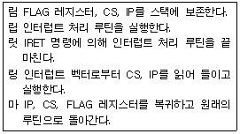
- 림링립릿마
- 립릿마링림
- 림립릿링마
- 릿립림마링
(정답률: 42%)
17. 프로그램이 실행될 때 세그먼트 레지스터가 가지는 주소값을 어셈블러에게 알려주는 지시어는?
- CDSG
- PUBLIC
- ASSUME
- DEBUG
(정답률: 70%)
18. 객체 지향 프로그래밍의 개념으로 거리가 먼 것은?
- 클래스
- 메시지
- 메소드
- 프로시저
(정답률: 60%)
19. C 언어에서 지정된 파일로부터 한 문자씩 읽어 들이는 파일 처리 함수는?
- fopen()
- fscanf()
- fgetc()
- fgets()
(정답률: 79%)
20. 객체지향 언어에서 캡슐화에 대한 설명으로 옳지 않은 것은?
- 변경시의 부작용을 방지한다.
- 객체간에 결합도를 낮춘다.
- 프로그래밍 생산성을 낮춘다.
- 객체의 응집도를 높인다.
(정답률: 72%)
2과목: 자료구조 및 데이터통신
21. 데이터 전송을 위한 에러 제어 기법이 아닌 것은?
- 패리티 검사
- 순환 중복 검사
- 자동 재 전송 방식
- HDLC
(정답률: 20%)
22. 다른 프로토콜 간의 네트워크 연결에 이용되는 장비는?
- 라우터
- 브리지
- 게이트웨이
- 리피터
(정답률: 55%)
23. 데이터링크 계층의 기능이 아닌 것은?
- 순서제어
- 흐름제어
- 서비스의 선택
- 에러검출 및 정정
(정답률: 58%)
24. 보기의 전송 제어 단계를 순서대로 나열한 것은?
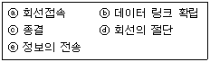
- ⓐ→ⓑ→ⓒ→ⓓ→ⓔ
- ⓐ→ⓑ→ⓔ→ⓓ→ⓒ
- ⓐ→ⓑ→ⓔ→ⓒ→ⓓ
- ⓐ→ⓔ→ⓑ→ⓓ→ⓒ
(정답률: 58%)
25. 패킷 교환망의 주요 기능 중 하나는 이용자들의 패킷 통신을 위한 경로 배정(routing control)이다. 다음 중 패킷교환기에 들어가는 경로 배정 프로그램 작성 시 경로 배정요소(parameter)가 아닌 것은?
- 성능 기준
- 프로그램 처리 속도
- 네트워크 정보 발생지
- 경로의 결정 시간과 장소
(정답률: 알수없음)
26. 다음 중 아래 내용이 설명하는 것은?
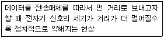
- 감쇠
- 혼선
- 왜곡
- 잡음
(정답률: 88%)
27. 주파수 분할 방식을 이용하여 사람의 음성을 다중화 하려고 한다. 음성 대역폭은 3kHz이고, 채널 간섭을 방지하기 위한 Guard band가 1kHz라고 가정할 경우에, 48kHz의 대역폭의 채널 상에 최대로 다중화 할 수 있는 사람의 음성 수는?
- 10개
- 12개
- 14개
- 16개
(정답률: 77%)
28. 부가가치통신망(VAN)의 계층 구조가 아닌 것은?
- 물리 계층
- 통신처리 계층
- 정보처리 계층
- 네트워크 계층
(정답률: 34%)
29. 아날로그 데이터를 디지털 데이터로 변조 전송할 수 있는 매체는?
- MODEM
- DSU
- CODEC
- 전화
(정답률: 27%)
30. OSI(Open System Interconnection)참조 모델 중 종단 간(End-to-End)의 데이터 전송을 책임지며, 세그멘테이션(Segmentation)과 재조립(reassembly)의 기능을 수행하는 계층은?
- 물리 계층
- 전송 계층
- 네트워크 계층
- 데이터링크 계층..
(정답률: 알수없음)
31. 스택(stack)이 사용되는 경우가 아닌 것은?
- 서브루틴(sub-routine)이 처리될 때
- 인터럽트(interrupt)가 처리될 때
- 출력되는 화일이 디스크에서 스풀(spool)될 때
- 산술문이 인픽스(infix) 표시에서 포스트픽스(postfix) 표시로 변환될 때
(정답률: 47%)
32. 직접화일에서 두개의 키값 K1 ≠K2인데 계산된 함수의 결과가 R(K1) = R(K2)인 경우 K1과 K2를 무엇이라 하는가?
- fragment
- overflow
- collision
- synonyms
(정답률: 63%)
33. 다음 sorting법 중 control key를 중심으로 한 좌우 데이터에 대해 교환연산을 근거로 하는 알고리즘은?
- insertion sort
- merge sort
- quick sort
- shell sort
(정답률: 67%)
34. 아래 자료에 대하여 버블 정렬(bubble sort)을 적용할 경우 pass 1의 실행 결과는?
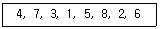
- 3, 1, 4, 5, 2, 6, 7, 8
- 1, 3, 4, 2, 5, 6, 7, 8
- 4, 3, 1, 5, 7, 2, 6, 8
- 1, 3, 2, 4, 5, 6, 7, 8
(정답률: 64%)
35. 트리(tree)의 차수(degree)는?
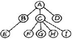
- 1
- 2
- 3
- 4
(정답률: 80%)
36. 다음의 tree를 postorder로 traverse한 결과는?
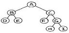
- ABDECFGHI
- DBEFCHGIA
- ABCDEFGHI
- DEBFHIGCA
(정답률: 79%)
37. n개 node의 스택(STACK)에 삽입(insert)을 위한 알고리즘이다. 오버플로우(overflow)의 처리를 위한 조건으로 [ ]에 알맞은 것은?
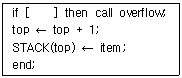
- top ≥n
- top ≤ n
- top = n+1
- top ≤ n-1
(정답률: 53%)
38. 다음과 같은 알고리즘(algorithm)이 있다. f(x) : if x = 1 then 0 else [{x·f(x - 1)} + x2] 이 알고리즘으로 계산한 f(4)의 값은?
- 53
- 29
- 148
- 100
(정답률: 64%)
39. 해싱 함수값 발생방법에 해당하지 않는 것은?
- 진수변환 방법
- 숫자이동변환 방법
- 숫자분석 방법
- 개방주소 방법
(정답률: 54%)
40. 논리적인 데이터베이스의 전체구조를 의미하는 것은?
- 서브 스키마
- 외부 스키마
- 개념 스키마
- 내부 스키마
(정답률: 54%)
3과목: 전자계산기구조
41. 랜덤(random) 처리가 되지 않는 기억장치는?
- 자기 드럼
- 자기 디스크
- 자기 테이프
- 자심
(정답률: 65%)
42. 다음 중 잘못 연결한 것은?
- Associative Memory-Memory Access 속도
- Virtual Memory-Memory 공간 확대
- Cache Memory-Memory Access 속도
- Memory Interleaving-Memory 공간 확대
(정답률: 60%)
43. 그림과 같은 회로는 무엇인가?
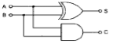
- 반가산기
- 전가산기
- 반감산기
- 전감산기
(정답률: 84%)
44. 메이저 스테이트 중 하드웨어로 실현되는 서브루틴의 호출이라고 볼 수 있는 것은?
- FETCH 스테이트
- INDIRECT 스테이트
- EXECUTE 스테이트
- INTERRUPT 스테이트
(정답률: 알수없음)
45. 다음에 실행할 명령의 번지를 갖고 있는 레지스터는?
- MBR
- MAR
- IR
- PC
(정답률: 74%)
46. 다음 주소 지정 방식 중 속도가 가장 빠른 주소 방식은?
- immediate addressing mode
- direct addressing mode
- indirect addressing mode
- index register
(정답률: 67%)
47. 논리 마이크로 동작 중 Exclusive-OR과 같은 동작을 하는 것은?
- Selective-set 동작
- mask 동작
- compare 동작
- selective-clear 동작
(정답률: 62%)
48. 간접 상태(indirect state) 동안에 수행되는 것은?
- 명령어를 읽는다.
- 오퍼랜드의 주소를 읽는다.
- 오퍼랜드를 읽는다.
- 인터럽트를 처리한다.
(정답률: 50%)
49. 다음 주변장치 중 library program들을 기억시켜 두는데 가장 적합한 것은?
- magnetic tape
- magnetic disk
- paper tape
- terminal
(정답률: 74%)
50. Von Neumann형 컴퓨터의 연산자들이 가져야 하는 기능과 가장 거리가 먼 것은?
- 증폭 기능
- 제어(control) 기능
- 전달(transfer) 기능
- 함수 연산(functional operation) 기능
(정답률: 67%)
51. 데이지체인(daisy-chain) 우선순위 인터럽트 방법에 대한 설명 중 옳은 것은?
- 소프트웨어적으로 가장 높은 순위의 인터럽트의 소스부터 차례로 검사하여 그 중 가장 우선순위가 높은 소스를 찾아낸다.
- 인터럽트를 발생하는 모든 장치들을 직렬로 연결한다.
- 각 장치의 인터럽트 요청에 따라 각 비트가 개별적으로 세트될 수 있는 레지스터를 사용한다.
- CPU에서 멀수록 우선순위가 높다.
(정답률: 73%)
52. 전 가산기(full adder)의 carry 비트를 논리식으로 나타낸 것은? (단, x, y, z 는 입력, C (carry)는 출력)
- C = x⊕y⊕z
- C = x‘y+x’z+yz
- C = xy+(x⊕y)z
- C = xyz
(정답률: 46%)
53. 다음 기억장치 중 CAM(Content Adderssable Memory)이라고 하는 것은?
- 주기억 장치
- Cache 기억장치
- Virtual 기억장치
- Associative 기억장치
(정답률: 75%)
54. 다음 중 채널의 종류가 아닌 것은?
- software channel
- character multiplexer channel
- selector channel
- block multiplexer channel
(정답률: 43%)
55. 인터럽트 요청 신호회선 체제에 대한 설명 중 옳지 않은 것은?
- 단일 인터럽트 요청 신호회선 체제는 인터럽트 요청이 단일 회선을 이용하기 때문에 인터럽트를 요청한 장치 판별과정이 필요하다.
- 단일 인터럽트 요청 신호회선 체제는 폴드 인터럽트(Polled Interrupt) 방식이라고도 하며 복귀주소인 PC의 값을 메모리 0번지, 스택, 인터럽트 벡터 등 다양하게 저장한다.
- 고유 인터럽트 요청 신호회선 체제는 벡터 인터럽트(Vector Interrupt) 방식이라고도 하며 인터럽트 서비스 루틴으로 분기하는 명령들로 구성된 인터럽트 벡터를 이용한다.
- 고유 인터럽트 요청 신호회선 체제는 장치마다 고유한 인터럽트 요청 신호회선을 가지므로 인터럽트를 요청한 장치 판별과정이 필요 없다.
(정답률: 40%)
56. 소프트웨어에 의하여 우선순위를 판별하는 방법을 무엇이라 하는가?
- 폴링
- 데이지체인
- 핸드쉐이킹
- 인터럽트 벡터
(정답률: 77%)
57. 2진수 (1011)2 을 Gray code로 변환하면?
- 1001
- 1100
- 1111
- 1110
(정답률: 58%)
58. 인스트럭션 세트의 효율성을 높이기 위하여 고려할 사항이 아닌 것은?
- 기억 공간
- 사용빈도
- 레지스터의 종류
- 주기억장치 밴드폭 이용
(정답률: 29%)
59. 명령어가 오퍼레이션 코드(OP code) 6비트, 어드레스 필드 16비트로 되어 있다. 이 명령어를 쓰는 컴퓨터의 최대 메모리 용량은?
- 16K word
- 32K word
- 64K word
- 1M word
(정답률: 86%)
60. 0-번지 명령형(zero-address instruction format)을 갖는 컴퓨터 구조 원리는?
- An accumulator extension register
- Virtual memory architecture
- Stack architecture
- Micro-programming
(정답률: 84%)
4과목: 운영체제
61. 인터럽트에 대한 설명으로 옳지 않은 것은?
- 프로세서가 명령문을 수행하고 있을 때 다른 작업을 처리하기 위해 그 수행을 강제로 중단시키는 사건을 인터럽트라고 한다.
- 인터럽트 발생시 복귀 주소(return address)는 시스템 큐에 저장한다.
- 인터럽트가 발생하면 해당 인터럽트 처리 루틴으로 가서 그 사건을 처리한 후 원래 중단되었던 프로그램 지점으로 되돌아온다.
- 인터럽트의 종류 중 기계검사 인터럽트는 하드웨어에 고장이 생겼을 때 발생하는 인터럽트를 말한다.
(정답률: 58%)
62. 가상기억장치에 대한 설명 중 옳지 않은 것은?
- 동적주소 변환(DAT) 기법은 프로세스가 수행될 때 가상주소를 실주소로 바꾸어 준다.
- 크기가 고정된 블럭을 페이지라 하며, 크기가 변할 수 있는 블럭을 세그먼트라 한다.
- 인위적 연속성(artificial contiguity)이란 가상주소 공간상의 연속적인 주소가 주기억장치에서도 인위적으로 연속성을 보장해야 하는 성질을 말한다.
- 세그먼트 기법에서 한 프로세스의 세그먼트들은 동시에 모두 기억장치 내에 있을 필요가 없으며, 연속적일 필요도 없다.
(정답률: 9%)
63. 시스템 소프트웨어와 그 기능에 대한 설명 중 옳지 않은 것은?
- 로더: 실행 가능한 프로그램을 기억 장치로 적재
- 링커: 사용자 프로그램 소스코드와 I/O 루틴과의 결합
- 언어 번역기: 고급언어로 작성된 사용자 프로그램을 기계어로 번역
- 디버거: 실행시간 오류가 발생할 경우 기계 상태 검사 및 수정
(정답률: 48%)
64. 견고한 분산 시스템을 구축하기 위해서는 어떤 종류의 결함이 발생할 수 있는지 알아야 한다. 분산 시스템에서 발생할 수 있는 일반적인 결함으로 볼 수 없는 것은?
- 링크 결함
- 사이트 결함
- 메시지의 분실
- 데이터 결함
(정답률: 25%)
65. 분산 운영체제의 구조 중 아래 설명에 해당하는 구조는?
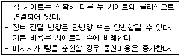
- ring connection
- hierarchy connection
- star connection
- partially connection
(정답률: 79%)
66. UNIX에서 파이프의 의미로 가장 적합한 것은?
- 분산 처리를 위한 임시 화일
- 프로세스 간의 생산자-소비자 모델의 데이터 전달을 위한 큐
- 프로세스간의 통신을 위한 공유 메모리
- 세마포어에 의해서 공유가 제어되는 자원을 사용하기 위해 대기 중인 프로세스들의 큐
(정답률: 34%)
67. 은행가 알고리즘(Banker's Algorithm)은 다음 교착상태 관련 연구 분야 중 어떤 분야에 속하는가?
- 교착 상태의 예방
- 교착 상태의 회피
- 교착 상태의 발견
- 교착 상태의 복구
(정답률: 69%)
68. 운영체제의 일반적인 역할이 아닌 것은?
- 사용자들간의 하드웨어의 공동사용
- 자원의 효과적인 운영을 위한 스케줄링
- 입, 출력에 대한 보조역할
- 실행 가능한 목적(object) 프로그램 생성
(정답률: 75%)
69. 분산처리 시스템의 장점 중 무엇에 해당하는가?
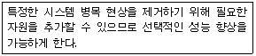
- 통신과 정보 공유(communication and information sharing)
- 점진적인 확장(incremental growth)
- 가용성(availability)
- 고장 허용성(fault tolerance)
(정답률: 59%)
70. 시스템 성능 평가 요인과 거리가 먼 것은?
- 프로그램 크기
- 신뢰도
- 처리능력
- turnaround time
(정답률: 알수없음)
71. 교착 상태 예방에 대한 설명 중 옳지 않은 것은?
- 교착 상태의 예방은 자원의 이용율이 낮아지지만 널리 사용되는 방법이다.
- 교착 상태의 예방은 시스템의 운영 중 상황을 보아가면서 교착 상태 가능성을 피해가는 것이다.
- 교착 상태의 예방은 가장 명료한 해결책이나 프로세스가 실행하기 전에 모든 자원을 배당시키는 등 엄격한 자원 배당과 해제 정책을 사용해야 한다.
- 교착 상태 예방은 상호 배제, 점유 및 대기, 비선점, 환형 대기 중 어느 하나라도 발생하지 않게 함으로써 예방이 가능하다.
(정답률: 30%)
72. 다중 프로그래밍 시스템에서 운영체제에 의하여 CPU가 할당되는 프로세스를 변경하기 위하여 현재 CPU를 사용하여 실행되고 있는 프로세서의 상태 정보를 저장하고 제어권을 인터럽트 서비스 루틴에게 넘기는 작업을 무엇이라 하는가?
- semaphore
- monitor
- mutual exclusion
- context switching
(정답률: 46%)
73. UNIX 시스템에서 파일보호를 위해 사용하는 방법으로 read, write, execute 등 세 가지 접근 유형을 정의하여 제한된 사용자에게만 접근을 허용하고 있다. UNIX의 이러한 파일보호 방법은 파일 보호 기법의 종류 중 무엇에 해당하는가?
- 파일의 명명(Naming)
- 접근제어(Access control)
- 비밀번호(Password)
- 암호화(Cryptography)
(정답률: 80%)
74. 자식 프로세스의 하나가 종료될 때까지 부모 프로세스를 임시 중지시키는 유닉스 명령어는?
- exit()
- fork()
- exec()
- wait()
(정답률: 54%)
75. HRN(Highest Response Scheduling) 스케쥴링 기법에서 우선순위 결정 방법은?
- (대기시간 + 서비스 시간) / 대기 시간
- (대기시간 + 서비스 시간) / 서비스 시간
- 대기시간 / (대기 시간 + 서비스 시간)
- 서비스 시간 / (대기 시간 + 서비스 시간)
(정답률: 58%)
76. 해싱 등의 사상 함수를 사용하여 레코드 키에 의한 주소 계산을 통해 레코드를 접근할 수 있도록 구성한 파일은?
- 순차 파일
- 인덱스 파일
- 직접 파일
- 다중 링 파일
(정답률: 44%)
77. NUR(Not-Used-Recently) 페이지 교체방법에서 가장 우선적으로 교체 대상이 되는 것은?
- 참조되고 변형된 페이지
- 참조는 안되고 변형된 페이지
- 참조는 됐으나 변형 안된 페이지
- 참조도 안되고 변형도 안된 페이지
(정답률: 82%)
78. 자원이 총 12개 이고, 현재 할당된 양이 10개(P1:2, P2:4, P3:4)일 경우 아래 시스템을 안전 상태가 되도록 하려면, 다음 보기항 중 A, B의 요구량으로 적합한 것은?
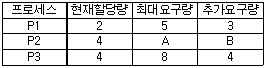
- 7, 3
- 6, 2
- 7, 4
- 6, 3
(정답률: 28%)
79. 디스크 스케쥴링시 발생하는 병목현상을 제거하기 위한 방법으로 옳지 않은 것은?
- 제어장치가 포화상태가 되면 해당 제어장치에 부착된 디스크의 수를 감소시킨다.
- 입출력 채널이 복잡하면 그 채널에 부착된 제어장치 중 몇 개를 다른 채널로 옮긴다.
- 입출력 채널이 복잡하면 채널을 추가한다.
- 입출력 채널이 복잡하면 그 채널에 부착된 제어장치를 통합한다.
(정답률: 25%)
80. 현재 헤드의 위치가 50에 있고 트랙 0번 방향으로 이동하며, 요청 대기 열에는 다음과 같은 순서로 들어 있다고 가정할 때, 헤드의 총 이동거리가 가장 짧은 스케줄링은?
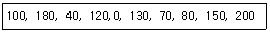
- C-SCAN 스케줄링
- FCFS 스케줄링
- SCAN 스케줄링
- SSTF 스케줄링
(정답률: 알수없음)
5과목: 마이크로 전자계산기
81. 30분-1시간 정도 자외선에 노출시키면 그 내용이 지워지는 것은?
- RAM
- 비트슬라이스 마이크로프로세서
- EAROM
- EPROM
(정답률: 80%)
82. 마이크로컴퓨터와 주변장치와의 데이터 전달 방법을 크게 세가지 방법으로 집약될 수 있다. 해당되지 않는 것은?
- Programmed I/O
- Interrupt I/O
- Channel I/O
- DMA
(정답률: 20%)
83. 진단 프로그램(diagnostic program)의 목적을 적절히 설명하지 못한 것은?
- 소프트웨어의 오류를 진단한다.
- 고장 증상을 결정하고 해석한다.
- 기능적 부분에서의 고장을 찾는다.
- 하드웨어적인 고장을 찾기 위해서 사용한다.
(정답률: 16%)
84. CPU가 주기억장치(main memory)에서 정보를 읽어 낼 때 필요 없는 것은?
- READ 신호
- 시스템 클럭(clock)
- 인터럽트 신호
- 어드레스 버스(address bus)
(정답률: 50%)
85. 메모리 중 리플레시(refresh) 사이클이 사용되는 것은?
- SRAM
- EPROM
- DRAM
- PLA
(정답률: 75%)
86. 마이크로컴퓨터와 입출력장치 인터페이스(interface)를 위하여 궁극적으로 일치 시켜줄 필요가 없는 것은?
- 시스템 버스(bus)
- 전기적인 신호(signal)
- 정보교환 코드(code)
- 전송제어 방식(protocol)
(정답률: 31%)
87. Floppy Disk의 구조는 아래의 그림처럼 동심원을 단위로 정보를 기록하게 되어 있다. disk 상의 정보를 찾기 위해서는 우선 어느 동심원 상에 정보가 있는지를 판단하게 된다. 이 동심원들은 무엇인가?
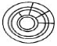
- 트랙(track)
- 섹터(sector)
- 레코드(record)
- 블럭(block)
(정답률: 70%)
88. 어셈블러 의사 명령(Pseudo instruction)의 기능과 상관없는 것은?
- 기계어로 번역된다.
- 어셈블러의 동작을 지시한다.
- 기억장소에 빈장소를 마련한다.
- 다른 프로그램에서 정의된 기호를 사용할 수 있게 한다.
(정답률: 47%)
89. 인터럽트가 필요한 경우가 아닌 것은?
- CPU가 입출력 장치를 통하여 효율적인 데이터 전송을 하고자 할 경우
- CPU에 타이밍 기능(timing function)을 부여하고자 할 경우
- 시스템에 비상 사태가 발생하는 경우
- CPU를 경유하지 않고 입·출력 장치와 기억장치간에 직접 데이터를 주고 받고자 하는 경우
(정답률: 70%)
90. 인스트럭션 설계시 고려 사항이 아닌 것은?
- 인스트럭션 형태
- 주소 지정 방식
- 연산자의 종류
- 인스트럭션 제어
(정답률: 0%)
91. 8K word의 메모리를 사용하는데 필요한 주소 선은 몇 개인가?
- 11
- 12
- 13
- 14
(정답률: 47%)
92. 양방향성(bidirectional) 버스는?
- 주소 버스
- 제어신호 버스
- ALU 버스
- 데이터 버스
(정답률: 72%)
93. microprocessor 내의 연산 결과가 틀렸음을 나타내주는 flag는?
- CARRY
- ZERO
- OVERFLOW
- SIGN
(정답률: 50%)
94. 마이크로프로세서 시스템을 개발하기 위한 장비로서 거리가 먼 것은?
- MDS(Microcomputer Development Software)
- Logic Analyzer
- Digital Storage Scope
- Spectrum Analyzer
(정답률: 39%)
95. CPU가 시스템 버스를 사용하지 않는 시간을 이용하여 DMA 기능을 수행하는 방식을 무엇이라 하는가?
- Burst 방식
- Cycle Stealing 방식
- Paging 방식
- Interrupt 방식
(정답률: 60%)
96. 프로그램의 실행 결과가 목적했던 대로 얻어지지 않으면 프로그램 작성시 문법상의 오류나 논리상의 오류가 있었는지 찾아 수정해야 한다. 이것은 프로그램의 개발 단계 중 어디에 속하는가?
- 문제분석
- 문서화
- 디버그
- 처리 순서의 결정
(정답률: 78%)
97. 되부름 서브루틴(recursive subroutine)을 처리하는데 유용한 자료 구조는?
- 큐(queue)
- 데크(dequeue)
- 환상 큐(circular queue)
- 스택(stack)
(정답률: 84%)
98. 이항(Binary) 연산을 하는 연산자는?
- increment
- clear
- OR
- shift
(정답률: 75%)
99. 그림은 마이크로컴퓨터 시스템 블럭도이다. 빈 블록(A)에 알맞은 내용은?
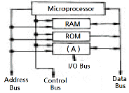
- Multiplexer
- Decoder
- Interface Units
- ALU
(정답률: 19%)
100. 중앙처리장치(CPU)에 가장 많이 의존하는 입출력 방식은?
- 프로그램에 의한 입출력
- 인터럽트에 의한 입출력
- 데이터 채널에 의한 입출력
- 입출력 전용장치에 의한 입출력
(정답률: 50%)